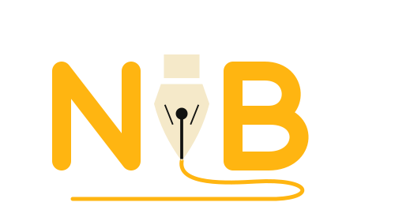

The writing I
The fountain nib becomes the I. Its tip draws a continuous underline beneath NIB.

Four ways to combine N, I and B with a fountain pen making its mark. Each design uses the website’s amber and ivory, with a small navbar preview underneath.
The fountain nib becomes the I. Its tip draws a continuous underline beneath NIB.

Joined lowercase nib lettering, finished by a fountain pen at the end of the ink stroke.

Bold, forward-leaning NIB lettering flows into a pen-drawn flourish from the B.

A compact NIB monogram enclosed by the same stroke the fountain nib is writing.

Choose a direction, or combine details you like. The live website still uses its current logo.